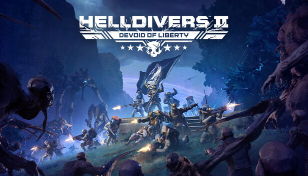
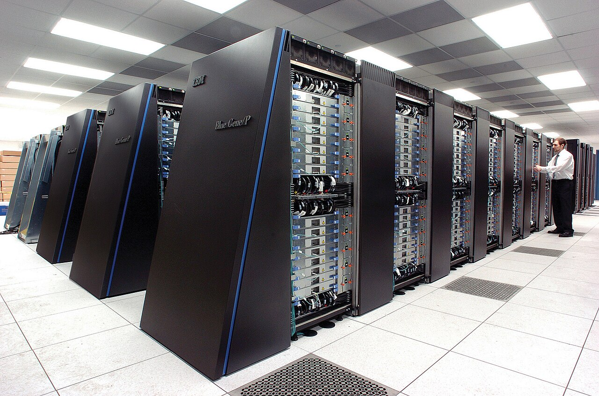
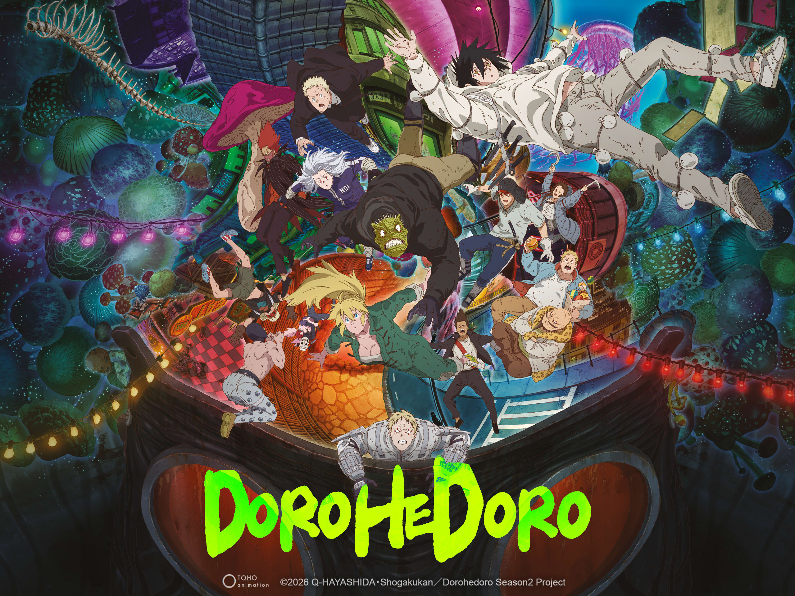

I have a wide range of interests, but I particularly enjoy exploring lore in my favorite video games and shows, and researching about computer technologies. Here I will showcase some things I've been into lately.

I've been enjoying playing Helldivers 2, and I'm particularly interested in the game's unique cooperative gameplay mechanics and mission design. I've also been exploring the game's lore and backstory, especially the events of the first game and how they connect to the sequel.

I've been interested in exploring the field of parallel computing, particularly how it handles i/o operations. I started researching this topic after a lecture about sequential programming and multi-programming in my Operating Systems class. I remembered hearing about multi-core processors and asked a question about it. However, my professor wanted to keep the lesson simple but a classmate told me I was talking about parallel computing.

I recently finished binge watching Dorohedoro, and I was very impressed with the animation and art quality. It was very unique compared to other anime I've seen since it was completely 3D animated. Usually I prefer 2D animation, but the execution of the 3D animation in Dorohedoro was very well done. I was constantly on the edge of my seat trying to figure out what was going to happen next, and I was very satisfied with the ending of season 2. Absolutely can't wait for season 3!